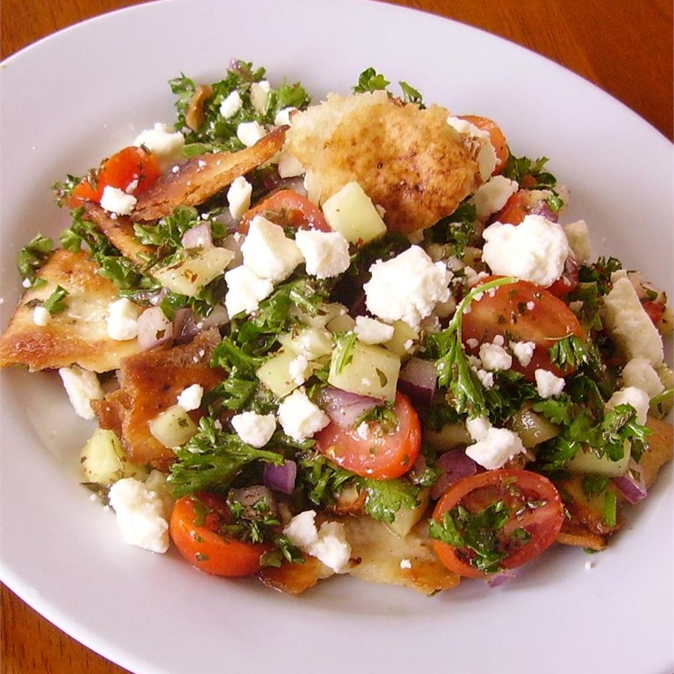

Fattoush

Fattoush is one of the most well known Middle Eastern salads and a standard dish on the
'mezza' (small dishes) table. It's a colorful tossed salad with a lemony garlic dressing,
and if you've never made a single Arabic dish, this is a delicious and healthy place to start.
- 1 large English cucumber, finely diced
- 3 cups halved grape tomatoes
- ½ red onion, finely diced
- ¾ cup chopped Italian parsley
- ¾ cup chopped fresh mint
- 2 tablespoons extra-virgin olive oil, or to taste
- 1 tablespoon fresh lemon juice, or to taste
- 1 teaspoon ground sumac, or to taste
- 1 clove garlic, crushed (or more to taste)
- kosher salt and freshly ground black pepper to taste
- 1 ounce sheep's milk feta cheese
- Heat vegetable oil in a large skillet over medium-high heat. Place pita pieces into the skillet without crowding. Fry in batches until golden brown and blot dry with paper towels.
- Combine cucumber, tomatoes, red onion, parsley, mint, olive oil, lemon juice, sumac, garlic, salt, and ground black pepper in a bowl. Gently toss salad with fried pita pieces. Grate feta cheese on top using a small cheese grater.